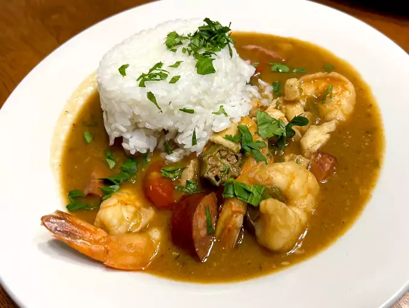

Creole Gumbo

Good New Orleans Creole Gumbo
Gumbo is one of the most famous dishes to result from Louisiana's shared Creole-Cajun heritage.
Gumbo falls somewhere between a thick stew and a hearty soup and can contain ingredients such
as chicken, sausage, ham, seafood, okra, tomatoes,
and greens.
Creole Gumbo Ingridients
- 1 cup all-purpose flour
- ¾ cup bacon drippings
- 1 cup coarsely chopped celery
- 1 large onion, coarsely chopped
- 1 large green bell pepper, coarsely chopped
- 2 cloves garlic, minced
- 1 pound andouille sausage, sliced
- 3 quarts water
- 6 cubes beef bouillon
- 1 tablespoon white sugar
- salt to taste
- 2 tablespoons hot pepper sauce (such as Tabasco®), or to taste
- ½ teaspoon Cajun seasoning blend (such as Tony Chachere's®), or to taste
- 4 bay leaves
- ½ teaspoon dried thyme leaves
- 1 (14.5 ounce) can stewed tomatoes
- 1 (6 ounce) can tomato sauce
- 4 teaspoons file powder, divided
- 2 tablespoons bacon drippings
- 2 (10 ounce) packages frozen cut okra, thawed
- 2 tablespoons distilled white vinegar
- 1 pound lump crabmeat
- 3 pounds uncooked medium shrimp, peeled and deveined
- 2 tablespoons Worcestershire sauce
Steps
- Make the roux.
- Make the gumbo.
- Reduce heat to a simmer and mix in sugar, salt, hot pepper sauce, Cajun seasoning, bay leaves, thyme, stewed tomatoes, and tomato sauce.
- Combine water and beef bouillon cubes in a large Dutch oven or soup pot and bring to a boil over medium-high heat.
- Meanwhile, melt 2 tablespoons bacon drippings in a skillet over medium heat.
- Mix in reserved vegetables, crabmeat, shrimp, and Worcestershire sauce, and simmer until flavors have blended, 45 more minutes.
Return to main page